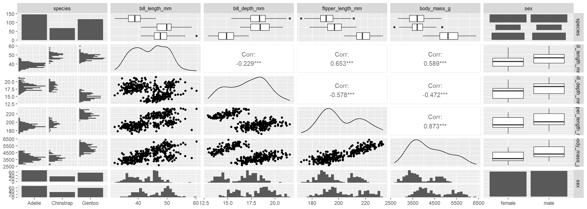
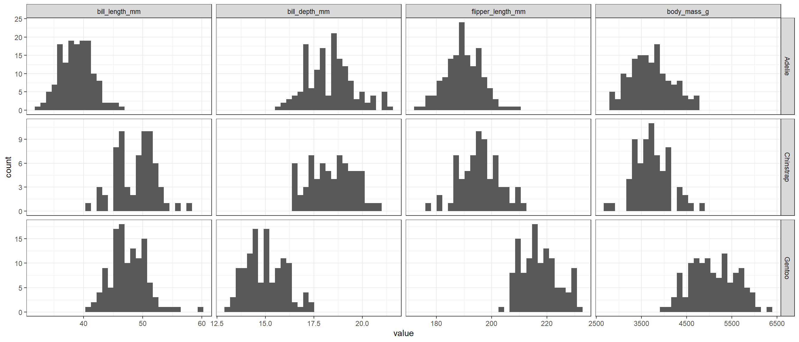
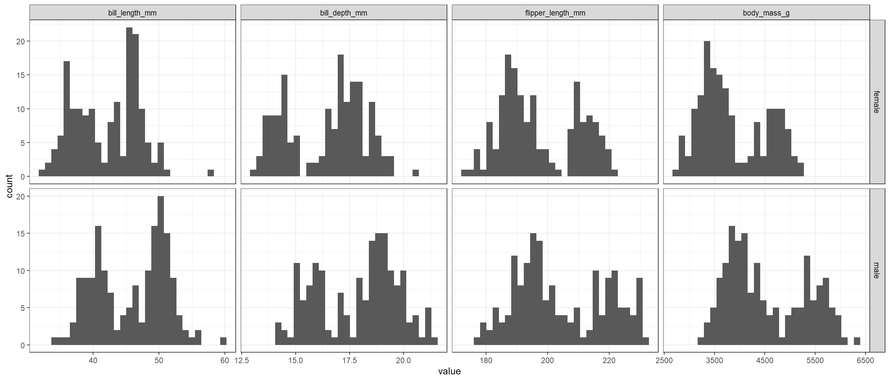

Identify penguin species using naive Bayes classification algorithm
analysis
R
Author
Aditya Ranade
Published
April 29, 2025
I found this dataset on UCI machine learning repository which gives the dataset for 3 penguin species in the islands of Palmer Archipelago, Antarctica. It has some basic measurements on the penguins of the 3 species.
library(reshape2)library(ggplot2)library(dplyr)library(ggh4x)library(GGally)library(naivebayes)library(caret)library(e1071)# Data is available in the palmer penguins package in Rlibrary(palmerpenguins)# Data processingdata0 <- penguinshead(data0)
# A tibble: 6 × 8
species island bill_length_mm bill_depth_mm flipper_length_mm body_mass_g
<fct> <fct> <dbl> <dbl> <int> <int>
1 Adelie Torgersen 39.1 18.7 181 3750
2 Adelie Torgersen 39.5 17.4 186 3800
3 Adelie Torgersen 40.3 18 195 3250
4 Adelie Torgersen NA NA NA NA
5 Adelie Torgersen 36.7 19.3 193 3450
6 Adelie Torgersen 39.3 20.6 190 3650
# ℹ 2 more variables: sex <fct>, year <int>
data0 |>str()
tibble [344 × 8] (S3: tbl_df/tbl/data.frame)
$ species : Factor w/ 3 levels "Adelie","Chinstrap",..: 1 1 1 1 1 1 1 1 1 1 ...
$ island : Factor w/ 3 levels "Biscoe","Dream",..: 3 3 3 3 3 3 3 3 3 3 ...
$ bill_length_mm : num [1:344] 39.1 39.5 40.3 NA 36.7 39.3 38.9 39.2 34.1 42 ...
$ bill_depth_mm : num [1:344] 18.7 17.4 18 NA 19.3 20.6 17.8 19.6 18.1 20.2 ...
$ flipper_length_mm: int [1:344] 181 186 195 NA 193 190 181 195 193 190 ...
$ body_mass_g : int [1:344] 3750 3800 3250 NA 3450 3650 3625 4675 3475 4250 ...
$ sex : Factor w/ 2 levels "female","male": 2 1 1 NA 1 2 1 2 NA NA ...
$ year : int [1:344] 2007 2007 2007 2007 2007 2007 2007 2007 2007 2007 ...
# Check the rows which do not have any entriessum(is.na(data0)) # 19 NA values
[1] 19
# exclude the rows which has NA in themdata00 <-na.omit(data0)
# Pairs plot between the explanatory variables to # check correlation between each pair of the variablesggpairs(data00[,-c(2,8)])

As expected, there is multicollinearity in the data for the continuous variables. This is not unexpected.
# Histogram based on speciesmelted_data <-melt(data00[,c(1,3,4,5,6)], id="species")# Plot the histogram of all the variablesggplot(melted_data,aes(value))+geom_histogram(aes(),bins =30)+facet_grid2(species~variable, scales="free")+theme_bw()

# Histogram based on sexmelted_data2 <-melt(data00[,c(3,4,5,6,7)], id="sex")# Plot the histogram of all the variablesggplot(melted_data2,aes(value))+geom_histogram(aes(),bins =30)+facet_grid2(sex~variable, scales="free")+theme_bw()

There is a distinct difference in the histogram of all the variables based on the species and sex. We will look to build a naive Bayes classification model to identify the species of penguins. First let us split the data into training and testing set.
# Select variables to be used in the modeldata <- data00 %>% dplyr::select(species,bill_length_mm,bill_depth_mm, flipper_length_mm,body_mass_g)data1 <-subset(data, species =="Adelie")data2 <-subset(data, species =="Chinstrap")data3 <-subset(data, species =="Gentoo")# split the data into training (70%) and testing (30%) dataseed <-33set.seed(seed)ind1 <-sample(floor(0.7*nrow(data1)),replace =FALSE)ind2 <-sample(floor(0.7*nrow(data2)),replace =FALSE)ind3 <-sample(floor(0.7*nrow(data3)),replace =FALSE)# Training datasetdata_train <-rbind(data1[ind1,],data2[ind2,],data3[ind3,])data_train |>count(species)
# A tibble: 3 × 2
species n
<fct> <int>
1 Adelie 102
2 Chinstrap 47
3 Gentoo 83